Ý tưởng
Hôm trước có lên bài về việc tạo static web với Hugo với công cụ là Github và Github Action, chúng ta có thể thực hiện tương tự với các dịch vụ của AWS. Ví dụ, ta có thể sử dụng Amazon S3 để lưu trữ trang web và Amazon CloudFront để phân phối nội dung. Ta cũng có thể sử dụng AWS CodePipeline và AWS CodeBuild để tự động hóa việc triển khai trang web mỗi khi có sự thay đổi trong mã nguồn. Đây là một cách rất tiện lợi và hiệu quả để quản lý và cập nhật website của bạn mà không cần phải lo lắng về việc cài đặt và vận hành server.
Bài viết này sẽ đi sâu vào việc sử dụng các dịch vụ của AWS để hộ trợ việc triển khai một website tĩnh sử dụng Hugo lên S3 Static Web.
Tạo S3 Static web
Bước đầu tiên vẫn là tạo trang web trước, nội dung tính sau 😂. Để host trang web tĩnh trên AWS, chúng ta có thể sử dụng tính năng Static website hosting của Amazon S3. Tuy nhiên, trước khi sử dụng tính năng này, chúng ta cần phải tạo một bucket S3 để lưu trữ các file của trang web. Sau đó, ta có thể cấu hình các quyền truy cập cho bucket S3 để cho phép trang web được truy cập từ bên ngoài. Việc sử dụng tính năng Static website hosting của S3 sẽ giúp cho việc host trang web trở nên đơn giản và hiệu quả hơn.
Tạo S3 Bucket
Việc cần thực hiện là tạo một S3 bucket với tên và tag nhất định. Tuy nhiên, để dễ dàng cho việc lưu trữ và chia sẻ website, cần phải kích hoạt Object Ownership và vô hiệu hóa các tùy chọn Block Public Access trên bucket.
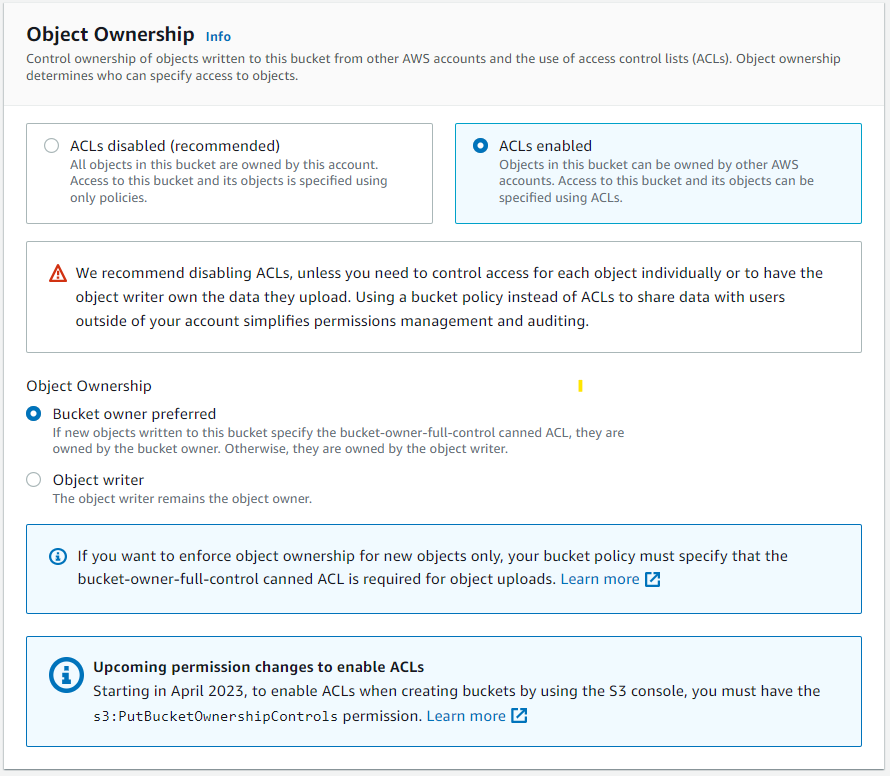
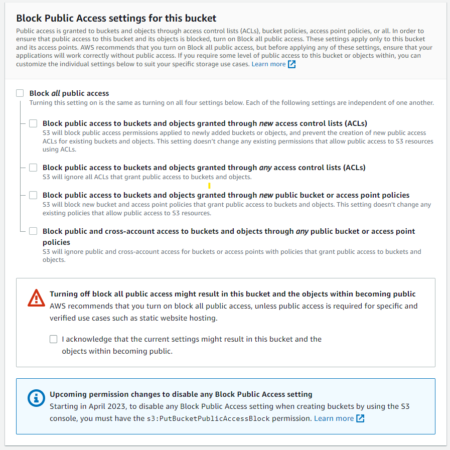
S3 Static Web Hosting
Để kích hoạt tính năng này, trước tiên bạn cần chọn vào S3 bucket muốn bật tính năng, sau đó chọn tab Properties, kéo xuống cuối trang và chọn Enable Static Web Hosting, sau đó nhập index.html vào phần Index document.
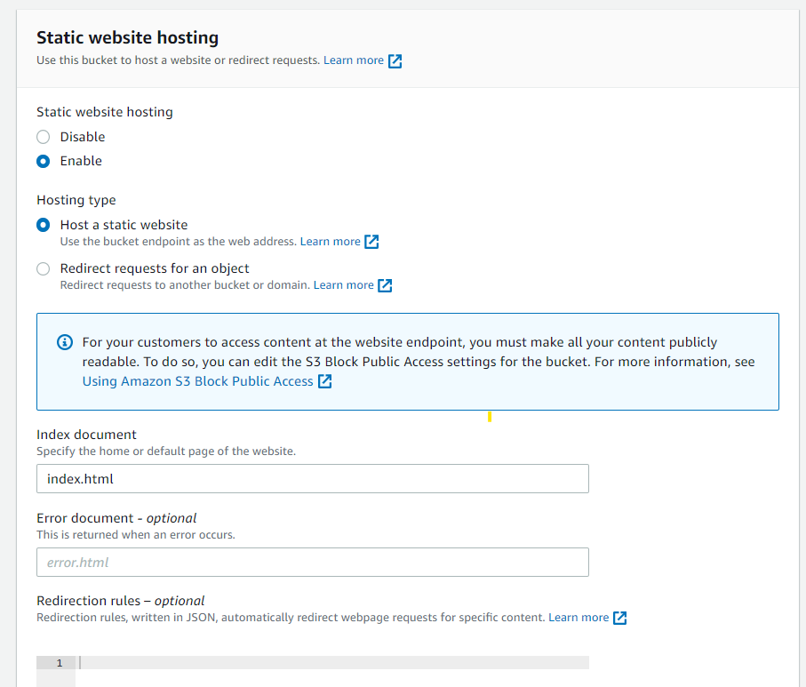
Tuy nhiên, khi truy cập vào S3 static web bằng tên miền, có thể gặp phải lỗi 403. Lỗi này xảy ra do S3 bucket chưa được public, do đó người dùng bên ngoài không thể truy cập được.
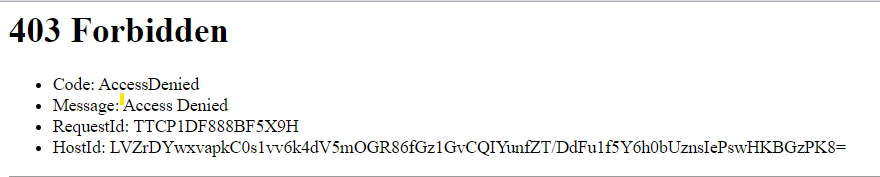
Thêm quyền getObject
Để cho người dùng có thể truy cập vào trang web static trên S3 mà không gặp phải lỗi 403, cần phải thêm quyền truy cập cho bucket. Việc này có thể được thực hiện bằng cách truy cập vào S3 bucket, chọn tab Permissions, và chọn phần Bucket policy. Sau đó, nhập đoạn mã sau vào phần policy (nhớ điền S3 Bucket name vào phần ARN nha).
{
"Version": "2012-10-17",
"Statement": [
{
"Sid": "Statement1",
"Principal": "*",
"Effect": "Allow",
"Action": [
"s3:GetObject"
],
"Resource": [
"arn:aws:s3:::<S3 Bucket name>/*"
]
}
]
}
Lúc này thử truy cập bằng S3 Static web url thì sẽ gặp lỗi 404 Not Found vì nội dung của trang web đang bị trống (không tìm thấy file index.html)
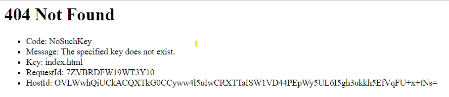
Tạo AWS Codepipeline
Để tự động hóa việc triển khai trang web mỗi khi có sự thay đổi trong mã nguồn (được lưu trữ trong Code Commit) chúng ta có thể sử dụng AWS CodePipeline và AWS CodeBuild.
AWS CodeCommit
Đã có nơi để lưu các file tĩnh của trang web, tiếp theo sẽ tạo một repository trên CodeCommit để lưu trữ mã nguồn của website Hugo. Bạn có thể sử dụng giao diện web hoặc dòng lệnh để tạo repository (Ở đây mình xài console cho nó thân thiện nhé 😁).
Đầu tiên truy cập giao diện console của AWS và tìm đến phần Commit
Chọn vào phần Create Repository và nhập thông tin vào để tạo 1 repository thôi (🤣Đơn giản mà🤣🤣).
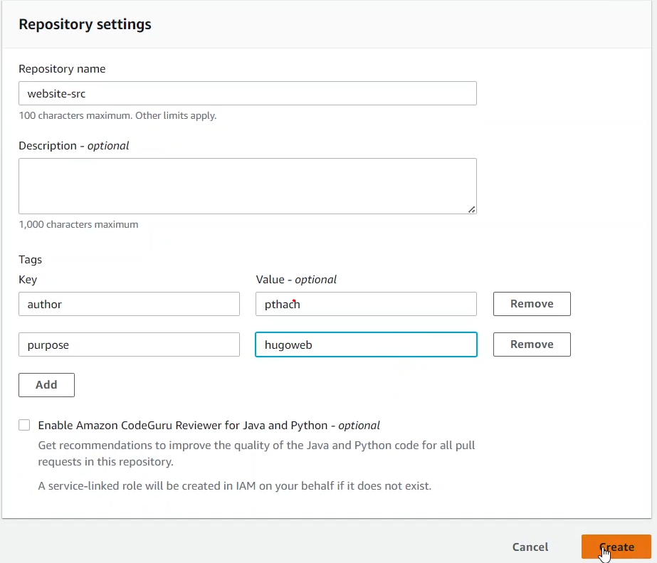
Sau khi tạo xong, bạn cần clone repository về máy tính của bạn và copy các file của website Hugo vào thư mục của repository.
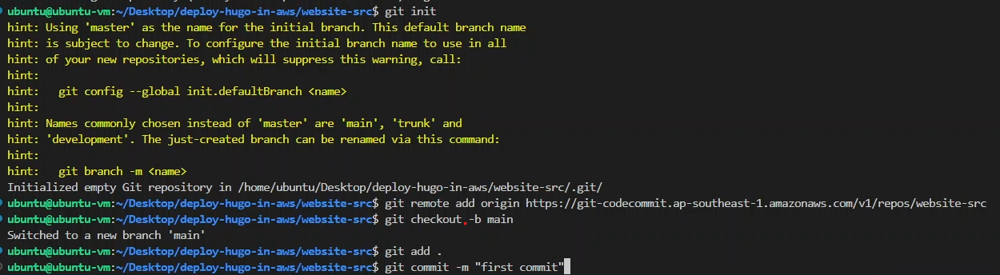
Vấn đề là đâu phải muốn commit là được commit đâu. Phải đăng nhập nữa. Đầu tiên cần phải sử dụng AccessToken để đăng nhập vào AWS Cli (dùng lệnh aws configure) sau đó sử dụng câu lệnh này để đăng nhập:
git config --global credential.helper '!aws codecommit credential-helper $@'
git config --global credential.UseHttpPath true

Phần này mình bỏ qua về Hugo resource, nếu muốn tìm hiểu thêm bạn chịu khó xem lại bài Blog trước của mình nhé.
AWS CodeBuild
Trước khi đi vào tạo CodeBuild thì phải xây dựng file build trước đã. Tạo 1 file có tên là buildspec.yml và lưu nó ở trong repository được tạo ở bước trước. Và nội dung của file build như sau:
version: 0.2
phases:
install:
commands:
- apt-get update -y
- echo Installing hugo
- curl -L -o hugo.deb https://github.com/gohugoio/hugo/releases/download/v0.111.3/hugo_0.111.3_linux-amd64.deb
- dpkg -i hugo.deb
- hugo version
build:
commands:
- hugo -v
artifacts:
files:
- '**/*'
base-directory: 'public'
Tạo file build xong rồi thì tạo CodeBuild thôi. Để tạo CodeBuild thì đầu tiên là truy cập đến CodeBuild sau đó chọn Create build project với các thông tin như:
Cấu hình CodeBuild
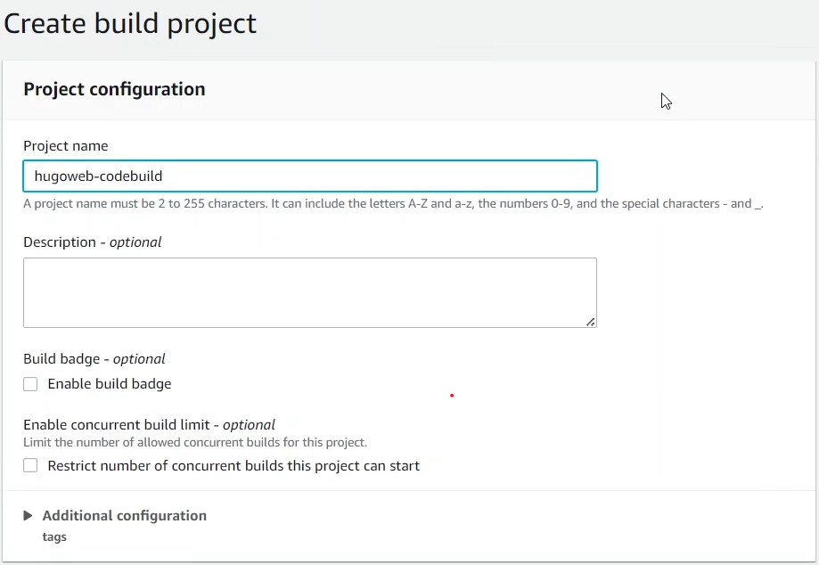
Mã nguồn
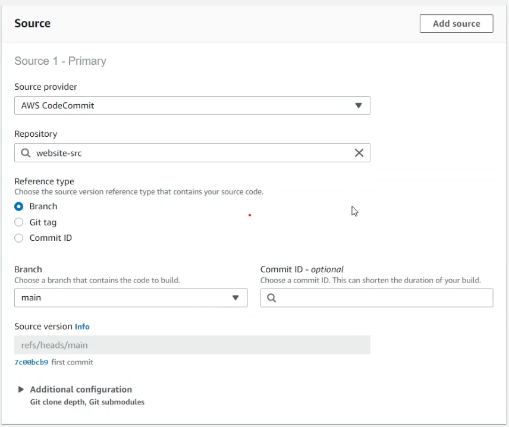
Môi trường build:
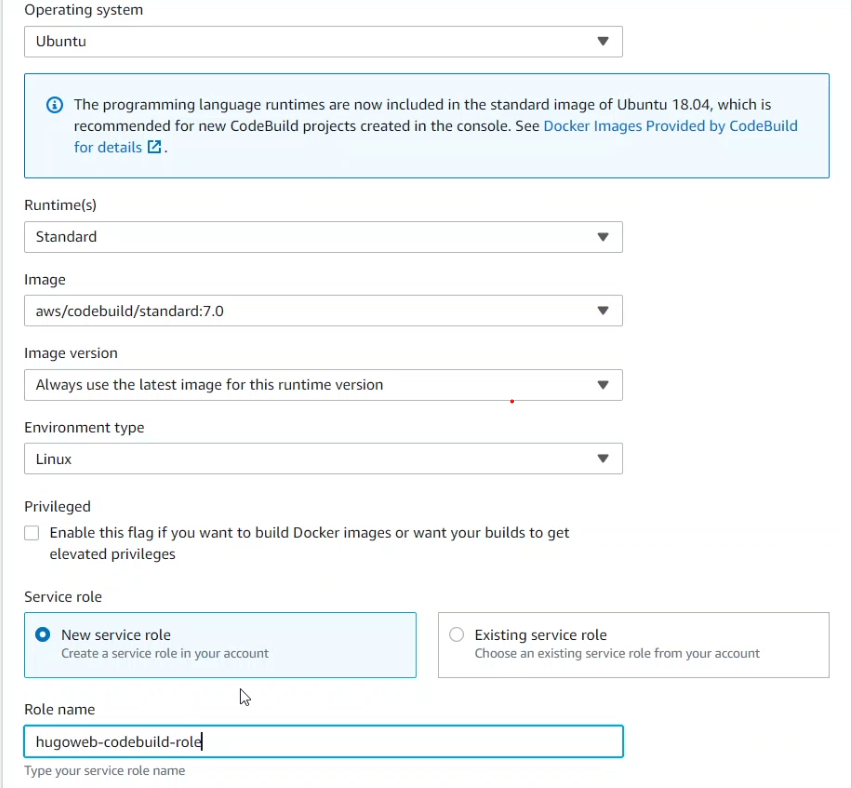
Ngoài ra còn có vị trí file buildspec,… Và cuối cùng là tạo CodeBuild
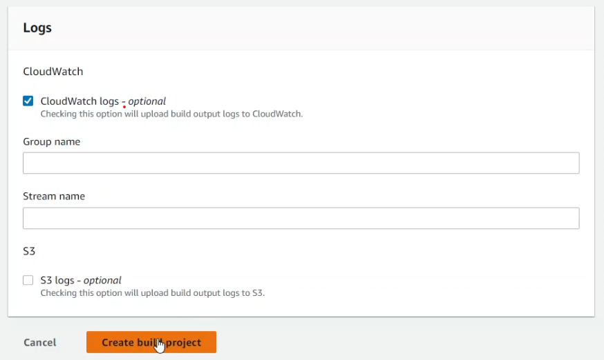
Tạo xong thì test thử thôi
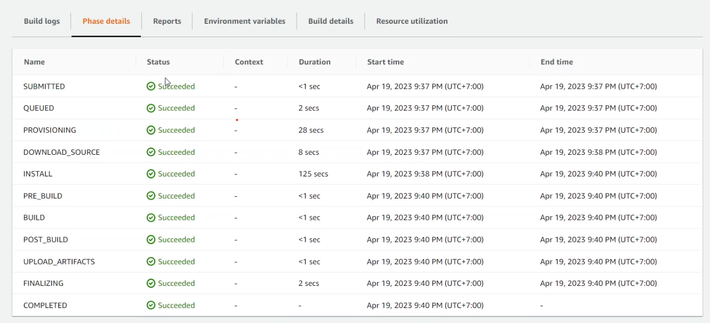
AWS CodePipeline
Tạo một pipeline trên CodePipeline để tự động hóa quá trình triển khai website. Để cấu hình CodePipeline cần phải cấu hình các thành phần sau:
tên pipeline
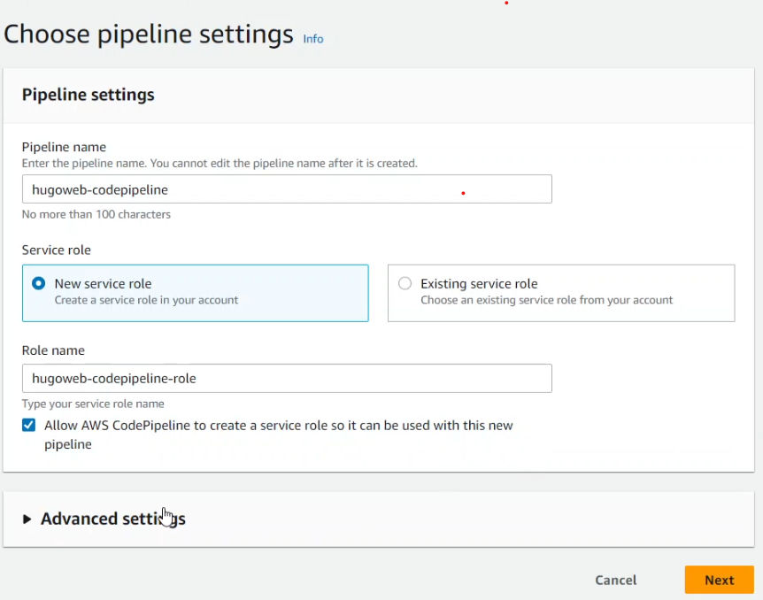
Mã nguồn (CodeCommit)
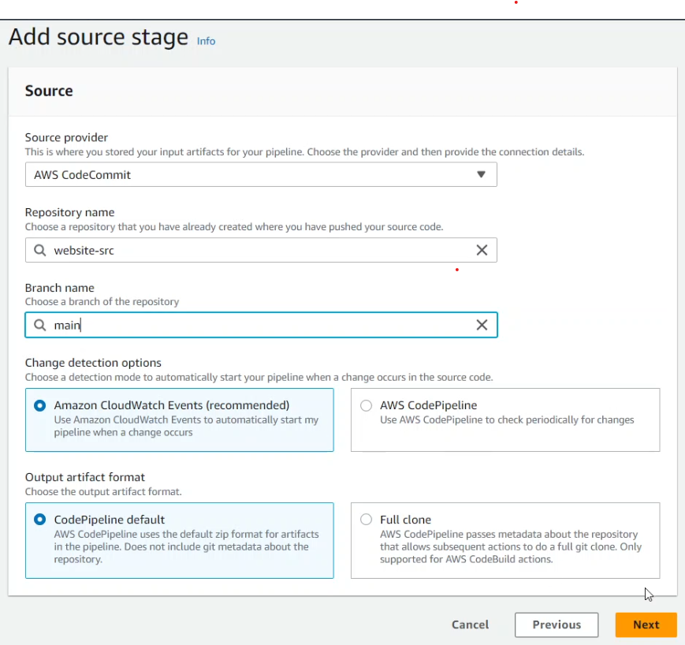
giai đoạn build (CodeBuild)
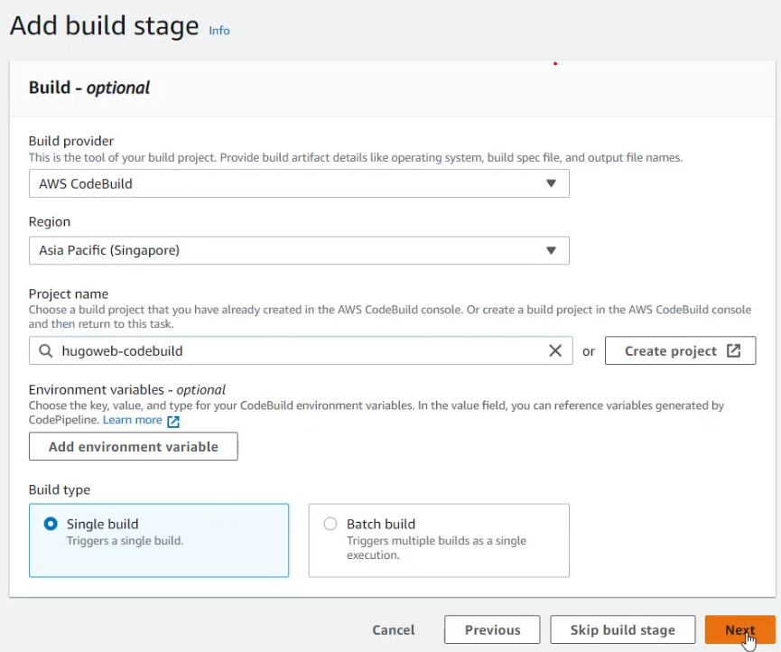
giai đoạn deploy (S3)

Sau khi tạo xong pipeline, bạn có thể kiểm tra trạng thái của các giai đoạn và xem kết quả triển khai trên S3.
Kiểm tra xem các tệp đã được cài đặt và chuyển sang S3 chưa
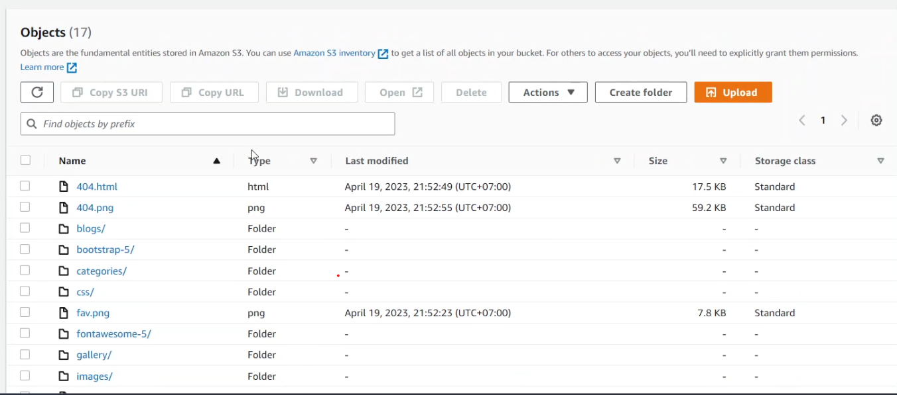
Vấn đề gặp phải và giải pháp
Tùy chọn Extract file before deploy
Lời kết
Đến đây, bạn đã hoàn thành việc triển khai website Hugo lên S3 Static Web bằng CodeCommit, CodeBuild và CodePipeline. Bạn có thể thử thay đổi nội dung của website trên CodeCommit và xem pipeline tự động chạy và cập nhật website trên S3. Chúc các bạn thành công!